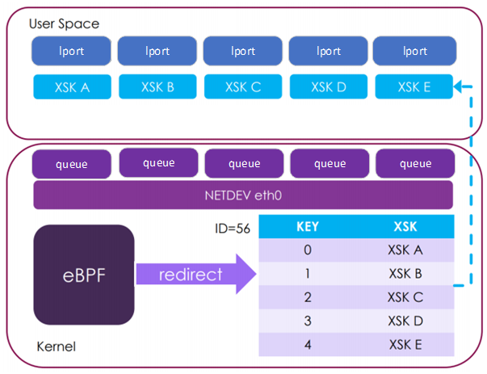

3. AF_XDP Poll Mode Driver¶
AF_XDP is an address family that is optimized for high performance packet processing. AF_XDP sockets enable the possibility for XDP program to redirect packets to a memory buffer in userspace.
For the full details behind AF_XDP socket, you can refer to AF_XDP documentation in the Kernel.
This Linux-specific PMD driver creates the AF_XDP socket and binds it to a specific netdev queue, it allows a CNDP application to send and receive raw packets through the socket which would bypass the kernel network stack. Current implementation only supports single queue.
AF_XDP PMD enables need_wakeup flag by default if it is supported. This need_wakeup feature is used to support executing application and driver on the same core efficiently. This feature not only has a large positive performance impact for the one core case, but also does not degrade 2 core performance and actually improves it for Tx heavy workloads.
Note
For AF_XDP CNDP interacts with a logical port (lport) which is a netdev queue pair rather than interacting with the full netdev.
The image below shows the logical view of lports
3.1. Prerequisites¶
This is a Linux-specific PMD, thus the following prerequisites apply:
A Linux Kernel (version > v4.18) with XDP sockets configuration enabled;
libbpf (within kernel version > v5.1-rc4) with latest af_xdp support installed, User can install libbpf via make install_lib && make install_headers in <kernel src tree>/tools/lib/bpf;
A Kernel bound interface to attach to;
For need_wakeup feature, it requires kernel version later than v5.3-rc1;
For PMD zero copy, it requires kernel version later than v5.4-rc1;
For Busy Polling, it requires at least kernel version 5.11.
3.2. Limitations¶
MTU
The MTU of the AF_XDP PMD is limited due to the XDP requirement of one packet per page. In the PMD we report the maximum MTU for zero copy to be equal to the page size less the frame overhead introduced by AF_XDP (XDP HR = 256) and CNDP (frame headroom = 320). With a 4K page size this works out at 3520. However in practice this value may be even smaller, due to differences between the supported RX buffer sizes of the underlying kernel netdev driver.
For example, the largest RX buffer size supported by the underlying kernel driver which is less than the page size (4096B) may be 3072B. In this case, the maximum MTU value will be at most 3072, but likely even smaller than this, once relevant headers are accounted for eg. Ethernet and VLAN.
To determine the actual maximum MTU value of the interface you are using with the AF_XDP PMD, consult the documentation for the kernel driver.
Note: The AF_XDP PMD will fail to initialise if an MTU which violates the driver’s conditions as above is set prior to launching the application.
3.3. Busy Polling¶
As described in Introduce preferred busy-polling the AF_XDP PMD can be configured to use busy-polling. This can reduce interrupt overhead and improve performance for workloads where the interrupt is assigned to the same core as the application thread processing the queue. In other words, the userspace processing and the kernel processing run on the same core, without Rx interrupts.
To configure busy polling, first the napi_defer_hard_irqs and gro_flush_timeout knobs must be programmed. This is not done automatically by CNDP.
$ echo 2 | sudo tee /sys/class/net/eth0/napi_defer_hard_irqs
$ echo 200000 | sudo tee /sys/class/net/eth0/gro_flush_timeout
The busy polling settings can be configured in the json file:
busy_poll - Enable busy polling support, true or false, default false
busy_polling - Same as above
busy_timeout - 1-65535 or 0 - use default value, values in milliseconds
busy_budget - 0xFFFF disabled, 0 use default, >0 budget value
Configuring busy polling is a privileged operation. For more information on how to configure this setting in an unprivileged container, see Integration of the K8s device plugin with CNDP.